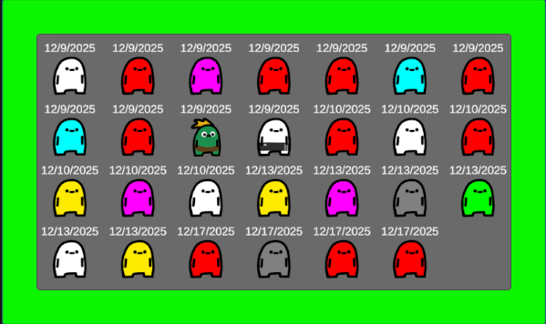
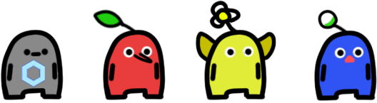
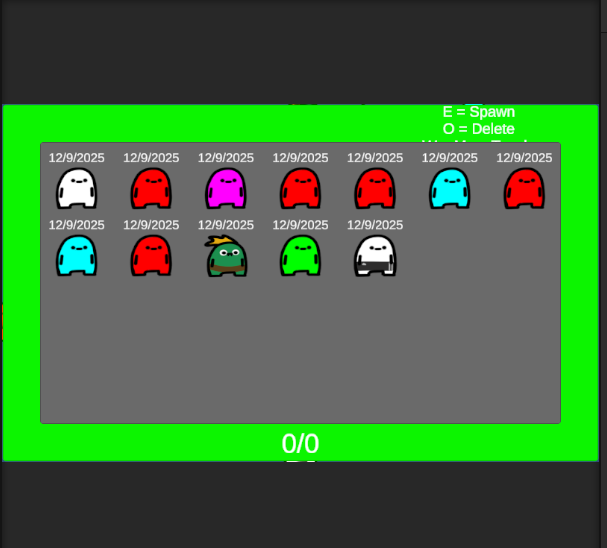
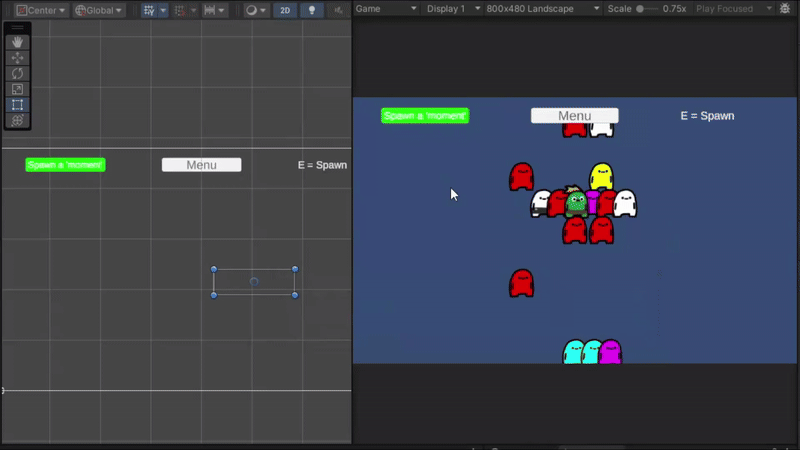

entry #4: glhf-grow-desktop-journalapp
Week 3 was mostly about polish and refinement rather than new systems.
I fixed the squished Legendary sprites in the Calendar menu by
enabling preserveAspect on the affected
Image components. This preserves the original aspect ratios and
allows Legendary assets to use different dimensions without visual
distortion.
I also updated the capsule cooldown logic so it now resets at midnight
instead of using a rolling 24-hour timer, which feels more intuitive
for daily mechanics. For testing purposes, I added a developer keybind
(Q) that instantly resets the timer, making it easier to iterate on
odds and content.
On the content side, I added several new Epic designs, including
Pikmin-inspired characters. These introduced a need for special-case
handling in the character logic, since certain Epic variants will use
unique animations that don’t apply to the rest of the character pool.


This week focused on getting a functional desktop build in place. I
converted the existing UI systems—mainly the Details and Calendar
pages—into desktop-friendly layouts. The core logic remained the same,
but several UI elements needed resizing and restructuring to behave
correctly at larger resolutions. During this process, I noticed some
Legendary icons were being squished in the Calendar view due to how
their UI containers were scaling, so I flagged that for later cleanup.
I also started implementing a daily capsule limit, using a simple
client-side time check based on the user’s local system time. At the
same time, I began planning adjustments to the rarity odds, with the
goal of making Epic and Legendary pulls more common as more assets are
added. Patterned variants are still up in the air, but for now the
priority is expanding the Epic and Legendary pools and rebalancing
probabilities.

By the end of the week, I added a delete confirmation window to the Details page and completed the first version of the 24-hour timer, which currently resets based on elapsed time. Since this is an offline project, the system is intentionally client-side only. Next up are enabling image uploads on the Details page, increasing rarity odds, and potentially adding shiny or visual variants.
